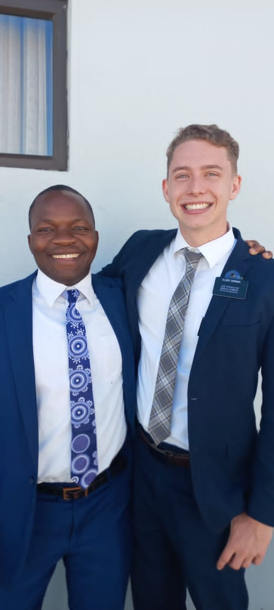

Kenyon Chipman
- Education
- Graduated Mountain View High School in 2020
- Currently Studying at Brigham Young University
- Work Experience
- Turf & Trees Landscaping
- Knowledge on various equipment type, use, and maintenance
- LeSueuer Car Company
- Managed organization of new inventory into website
- Oversaw and created videogreaphy and photography of new vehicles
- Solved inventory-to-website backlog problem by finding a way to systematically upload new cars onto website
- Aspen Ridge Temporary Rehab
- Certified on how to safely ambulate and transfer physically limited patients
- Handled patient vital signs readings
- Skills, Certifications, Honors
- Certified Nurse Assistant in the State of Utah
- Video editing in various applications
- Music creation in Garageband
- Won the Hale Elementary School Spelling Bee back to back years
